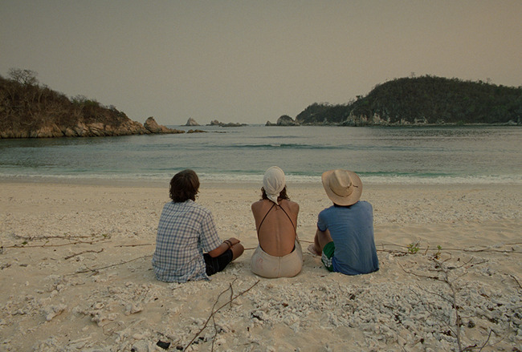

Bold stylistic decisions taken by a young and adventurous Alfonso Cuarón make this such a delightfully unconventional film. Filmmaker's artistic voices are often strongest in their early low-budget works when they have fewer restrictions and stronger aspirations.
I have shown this film to numerous friends now and it is always interesting to see how they respond. Many find the film on the surface comedic and captivating -- but are often frustrated with each lead character and their actions. Their frustrations often stem from the fact that beyond the carefree and adventurous nature of the three leads, each is fundamentally flawed and often act in mystifying ways. On the contrary, this decision by Cuarón to have such erratic and complex characters is precisely what provides the rich texture that makes this film quite special.
Stripped to its core, the story is about two deadbeat teenage friends who trick an older woman into going on a trip with them -- on which they find out each other's tales of infidelity and deceit, uncover the weaknesses in their friendship, and slowly drift apart -- all while lustfully competing for the woman's attention. This woman is even more childish than the kids, further causing conflict between them. The ending leaves the audience and the characters themselves scratching their heads. Cuarón takes this absurd story and turns it into a wonderfully rich tale of male friendship and the complexity of human relationships. This is possible because the characters feel fundamentally human and their actions while mystifying, are understandable given the context of their own journey.
I vehemently believe that in order to empathize with a character and their journey, the audience needs to merely understand the motivations behind their actions, not necessarily agree with them. By understanding I mean you need to be able to make sense of why a character makes a decision given their unique context. To help the audience gain this feeling of understanding, the director makes a unique decision -- he has a narrator just tell us facts about a character's life throughout the film. This is not lousy exposition, rather a unique way to build the backstory of the characters without having to show their individual stories. Through these snippets, we hear about each character and uncover more of the journey that each took to this point -- giving us an insight into why they might be behaving in the manner they are. The narrator never explicitly explains the mentality of the characters, that is rather left as an exercise for the audience. Even if these snippets often have nothing to do with the primary plot, they help make the characters feel like real people instead of just pawns of the story.
Another unique aspect of this film is how it navigates and highlights the cultural climate of Mexico at that time. From the opening scene involving street violence, the director is very upfront about his intention to deal with these subjects. There is an active effort made to contextualize this story outside of the boundaries of the plot and show how there is so much violence and pain surrounding this largely playful story. The abrupt narration helps jolt the audience out of the continuity of the story and reminds them that this is just a romanticized snapshot rather than an accurate retelling.
The film is also shot incredibly well, with a raw and unfinished aesthetic that works effortlessly with this sort of story.
There are so many questions you can ask about the characters and their actions, but I propose that is precisely what makes this film so special. Often times people just don't make sense, and that is what makes them truly feel real.